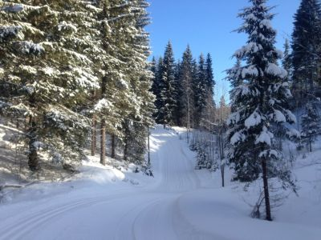
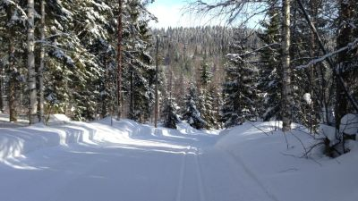
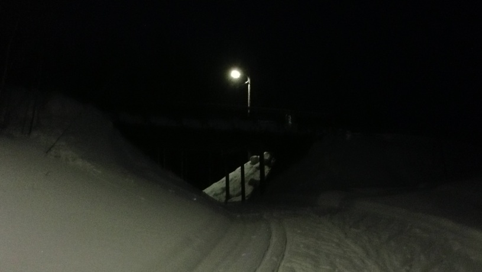
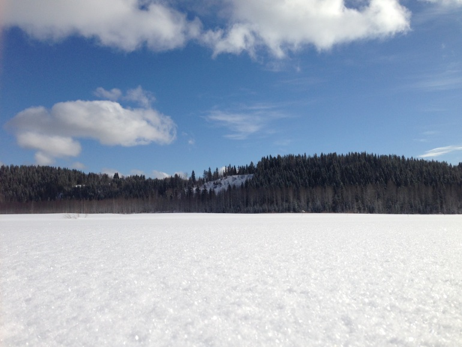
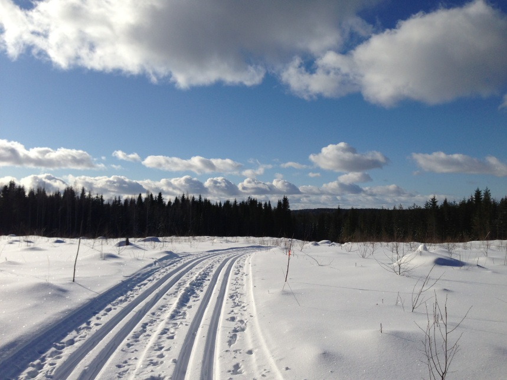
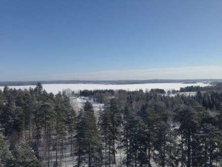

Сенсация!!! Лыжный велотур.
Приглашаем Вас принять участие в нашем новом лыжном туре. Это путешествие к землям, где по преданию когда-то обитал народец ролли, веривший Духу Сауны, и эльфы.
Предание гласит о том, что согласно проклятию всё живое стало превращаться в камень. Тогда эльфы и ролли, изначально не особо дружные, сплотили свои силы в поисках волшебного цветка. Пройдя сложнейший путь и победив все обстоятельства и силы тьмы, они счастливые вернулись домой, познав радость единства, дружбы, доброты и любви. И вновь зацвели цветы, зашуршали листвой деревья, запели звонкие трели птицы, и всё вокруг наполнилось благодатью жизни. А ролли и эльфы стали прародителями нынешних жителей Тохмаярви.
Мы предлагаем Вам прочувствовать на себе красоту и
диво бывшего пристанища ролли и эльфов, озера Тохмаярви и его
окрестностей. Вы сможете насладиться свежим чистым морозным воздухом,
блистанием снега, окунуться в заснеженный лесной мир страны Суоми,
будете очарованы неповторимыми пейзажами, снежными шапками на могучих
елях. А может быть, Вам встретится кто-то из живущих по сей день ролли
и эльфов…
Если
Вы не мыслите своей жизни без лыжных прогулок или наоборот только
встали на лыжи и хотите ощутить радость полета с горок и покорения
новых вершин, то этот тур для Вас. В этот раз мы предлагаем Вам
поездку, которая будет в радость лыжникам и новичкам, и бывалым,
и спортсменам. Спортсменам мы даем возможность самостоятельно
спланировать тренировки исходя из доступных трасс. В такой ситуации
стиль может быть как классический, так и свободный. Предлагаемые нами
маршруты под руководством гида, рассчитанные на спокойную прогулку
классическим стилем, составлены таким образом, чтобы были возможные
точки схода с маршрута участников по каким-либо причинам, откуда
лыжников может забрать второй гид.
Обращаем Ваше внимание на то, что каждый день у Вас будет возможность
катания по вечерней освещенной трассе! И может быть, Вас встретит
чудо во время катания – небо распахнет свои просторы, охваченное
северным сиянием. Это волшебство, когда чувствуешь себя мельчайшей и
тончайшей частичкой огромной Вселенной, будто заключившей тебя в свои
нежнейшие объятия…

Итак, план таков:
День первый
Санкт-Петербург – Тохмаярви
Отъезд из СПб, вечер 18.00, пересечение границы. Дорога наша лежит в
городок Тохмаярви, находящийся в финской части северной
Карелии, известной своими живописными холмистыми
ландшафтами. Здесь озерная Финляндия сменяется лесными кряжами
Карелии, а крутые сопки летом отражаются в водной глади озер и рек.
Местные ландшафты - памятник природы, сохранившейся со времен
оледенения. Мы приедем и окунемся в мирное течение жизни вблизи природы.
День второй

Тохмаярви - Аккала - Риикола – Тохмаярви
27 км
Сегодня в нашем плане лыжная прогулка по заснеженным лесам и озеру
Тохмаярви. Здесь Вас встретят ели и сосны, снежное покрывало
озера Тохмаярви. Трасса равнинная без больших подъемов и
спусков. От озера мы сворачиваем и направляемся в деревню Аккала, после
которой Вас ждут 6 километров классической лыжни сквозь очаровательные
пейзажи заснеженного леса. Здесь рельеф более разнообразный. Вас
ожидают спуски и подъемы. После ланча в Рииколе мы завершаем круг к
озеру Тохмаярви и направляемся к дому.
День третий
Сегодня Вас ожидает лыжня Иломантси, где ежегодно в марте проходит 58-километровый марафон. 58 км – это общая длина всей трассы! Настоящий вызов для спортсменов! Есть круги 1,5 км, 6,5 км, 7 км, 10 км, 16,5 км, 28 км и естественно их комбинации. Можно выбрать себе маршрут в индивидуальном порядке или по согласованию с группой и гидом.
Вечером можно испытать свою выносливость в финской сауне и выкупаться в снегу, очистив дух и тело, чтобы на следующее утро проснуться вновь рожденными и благодарными Духу Сауны.
День четвертый
Китее – Латутупа – Ниинкумпу – Латутупа – Китее
28 км
Вас ожидают 10 км прогулки по спортивной трассе с петелькой в 18 км классического хода. Сегодня местность будет менее рельефной, чем в Рииколе, но не менее замечательной! В 300 м от нашего мотеля есть каток, который непременно станет объектом интереса нашей команды после возвращения. Здесь Вы сможете развить навыки фигурного и спортивного катания, а также пятнашек на коньках.
Вечером у нас лыжная вечеринка – это праздник для тех, кто посвятил несколько дней своей жизни настоящей зиме. Это наш последний вечер в Тохмаярви.
День пятый
Иматра
С утра мы уезжаем из мотеля уже со всеми вещами и направляемся в
город Иматра, что располагается недалеко от пограничного перехода с
нашей страной. Этот день мы предлагаем Вам посвятить шоппингу
и пешей прогулке по городу, расположенному в месте, где
"наша" Вуокса вытекает из Сайменского озера. Иматра - известный
курорт, который привлекал внимание Петербуржцев еще с царских времен. В
Иматре мы можем как покататься по лыжной трассе, которая идет по
Сайменскому озеру, либо предаться шопингу, либо попытаться совместить и
то и другое.
Днем мы покидаем город и держим путь к родным просторам с финишем в Санкт-Петербурге. Наше путешествие подошло к концу.
Будем рады Вашему участию!
В стоимость тура входит:
- трансфер до Тохмаярви и все запланированные программой переезды
- питание, за исключением обеда в Иматре
- проживание в мотеле (wifi)
- сауна
Обращаем Ваше внимание на то, что для предлагаемых нами вариантов
маршрутов необходимы лыжи для классического хода. Наш гид совершит с
Вами прогулку по красивейшим местам. Трассы под конек Вы можете
осваивать самостоятельно. По возможностям и трассам наш гид с радостью
проконсультирует Вас. Мы оставляем за собой право внести изменения в
программе в ходе путешествия.
Помимо предлагаемой нами программы у Вас есть возможность совершить
экстремальную поездку на снегоходах, поскольку снегоходная трасса
проходит рядом с Тохмаярви. Есть возможность проката снегохода и
покупки лицензии на день.

Стоимость участия указана на странице календарь.
{/block}